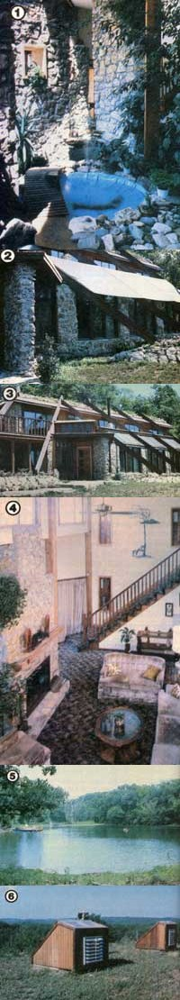
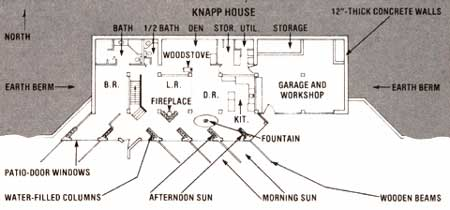

This Kansas family's very efficient dwelling was designed to help make their dreams come true!
The Knapp family (Evelyn, Gifford, and their son Kenneth) began to work toward self-sufficiency almost 20 years ago ... long before petroleum prices had begun to whittle away at the American lifestyle, and before solar energy became a national topic of conversation. They've pursued their dream of self-reliance in a variety of ways-by planting gardens, digging fishponds, maintaining timber lots, researching wind and water power, etc.-but the Kansans learned early on that the foundation of their efforts to "get away from it all" would have to be a home that demanded an absolute minimum of energy from external sources.
In the beginning Gifford and Kenneth were most intrigued by active solar systems, but-after researching the matter closely-they became convinced that intensive solar collection didn't suit their situation. First of all, the Sunflower Staters reasoned, active collectors really didn't provide many BTU per dollar invested. And the complexity of such devices was bound to lead to extensive maintenance sooner or later.
In fact, the whole idea of active collection, the amateur architects decided, was wrong for a single-family dwelling: "After all," they figured, "why attach all sorts of energy-catching gadgetry to a conventional house when the structure itself can be designed to use very little energy?"
The concept that the Knapps' years of analysis led them to favor was a marriage of earth-sheltering and passive solar features. So, with a vision in mind, the family began searching for a piece of property that would fit their plans perfectly. As you can imagine, it wasn't easy to find the ideal site, but a little over four years ago they managed to purchase 12 acres-on the outskirts of Kansas City-which had a south-facing hillside (unobstructed by topography or trees), a three-acre pond, flat garden sites, and a good stand of timber. Because they were so well prepared (as a result of their decade and a half of research), Mr. Knapp and Kenneth had little difficulty getting the appropriate permits and financing. (In fact, after construction began, the bank loan officer was so impressed by their plan that he actually waived the backup heat requirement.)
Both Kenneth and his father are experienced earth-movers and have worked in contracting-as well as at large-scale farming-so they elected to rent a bulldozer and do their own site preparation. With the forethought that's typical of their efforts, they dug the two-story-deep hole in the hillside a full year before they intended to start building . . . to permit the earth to settle and allow time to be very sure that any wet-weather springs had been identified and dealt with.
POST AND BEAM
As many of you no doubt know, earth;sheltering puts unusually high loads on a building . . . as a result of the dirt's weight pressing against the roof and walls. Consequently, the heavy-duty construction required by "going underground" can be the source of more than conventional expense. However, the Knapps-dipping into their storehouse of knowledge and consulting with acquaintances in the construction business-determined that a steel beam and concrete assembly approach could save them a great deal of money. ("Post and beam" construction, as it's called, has been used for centuries in wooden homes, but it's primarily employed in large commercial buildings today.)
The father-and-son team started by constructing a 12-inch-thick reinforced retaining wall against the back of the excavation. A monolithic pour was used to avoid the contact surfaces (called cold seams) which result from multiple stage pouring . . . and the concrete was pumped to eliminate bubbles. At the top of the first story, the builders capped the wall with cement-leaving pockets, spaced four feet apart, for beams-and then continued with an eight-inch-wide pour. At the roof line, they capped the wall again and added more recesses for girders.
With that done, 12-inch-thick side. walls were added (which buttress the rear retaining wall and provide support for additional horizontal struts). The network of steel I-beams was then set into position-with vertical posts spaced no more than 12 feet apart to provide support-and the concrete second floor and roof were poured directly onto corrugated steel panels . . . which function as both forms and reinforcement.
WATERPROOFING
In keeping with their "better safe than sorry" approach to building the energy-efficient structure, the Knapps took every possible waterproofing precaution . . . and added some inventions of their own for extra insurance. They first coated the exterior walls and roof with polyurethane sealant and then covered the carefully applied water barrier with hardboard .. . to protect it from any rocks that might settle out of the 36-inch earth covering. (One inch extruded foam insulation was also added to the roof, and to the upper five feet of the walls, at this point.)
Next Gifford and Kenneth devised a system to keep the load on the waterproofing as light as possible. Tiles-placed in gravel beds-were set at the fill-dirt line, against the base of the foundation and beneath the four-inch-thick floating slab. (All three of the "pipelines" exit in two directions, and their outlets drain into a large gravel field.)
PASSIVE SOLAR
Completion of their home's post-and-beam concrete shell absorbed just $17,000 of the Knapps' budget, so they were left with plenty of money to build solar features into the remaining framing and interior finishing. To maximize the amount of light entering the structure, the family invested in a massive expanse of glass to cover the building's southern exposure. While they were at it, they also included a row of plexiglass windows, angled at 45° to help light penetrate deeply into their earth-sided home.
With such a large amount of glazing, the Knapps knew they could have difficulties with overheating during sunny spells, so they devised a method to take some of the excess solar warmth and store it away for the evenings. Stone columns-each filled with 150 gallons of water in glass jars-were set to face 45° west of south . . . allowing sunlight to beam directly into the house in the morning, but shading the interior (while absorbing the sun's heat) in the afternoon. The columns, as well as a water-filled stone fireplace (which also has a built-in convective air current channel), were all constructed from rock that was quarried on the Knapps' property.
A number of other features help to maintain a comfortable environment in this earth-sheltered passive solar home. A fountain and a kitchen exhaust fan were installed to help maintain the desired humidity level inside the dwelling. And the building's air will soon be tempered by a 22-inch-diameter, 200foot-long intake
tunnel fitted with radiators which will circulate pond water. Plus, for those really hot spells-such as the 105°F scorcher that was in progress when MOTHER visited the Knapps-panels of Sunscreen solar shade can be pulled across the plexiglass windows to shield the interior.
HOW WELL DOES IT WORK?
The union of earth-sheltering and passive solar techniques has proved to be so successful that the house is now virtually heating and cooling self-sufficient. The chill of winter has forced the family to light their fireplace just six times, and their backup woodstove has yet to be used. In fact, when the Knapps once went away for six days during near 0°F weather, the temperature inside the dwelling dropped only to 57°F. And the home's warmest interior reading has been 86°F . . . during 1980's summer heat wave.
Perhaps the most amazing part of the Knapps' accomplishment is that they built the 3,400-square-foot (including 950 square feet for the garage) home for only $80,000 . . . or $23.52 per square foot. And the expenses include architectural fees (for the design of the stunning southside facade) as well as nearly $7,000 for cabinetry in the kitchen alone. As you can see from the accompanying photos, this is no barebones economy structure.
Of course, the low per-square-foot cost is almost entirely due to the fact that the Knapps put enormous amounts of thought and labor into the house. As a matter of fact, Evelyn did much of the beautiful stonework that graces the living room and bathroom. But Mr. Knapp stresses that, despite its elegance, their home is perfectly suited to the do-it-yourself builder. Postand-beam construction, he says, is actually one of the simplest construction methods going.
MOST OF THE WAY THERE
Completing their house is by far the largest step that Evelyn, Gifford, and Kenneth Knapp will ever have to take toward self-reliance. With a monthly utility bill that runs about $30 (for lights and appliances), total energy independence is right around the corner: Many of the components that will make up their hydropower plant are already built, and their own homemade windplant is about to come off the drawing board. (With typical foresight, the Knapps installed both AC and DC wiring in their home to accommodate several kinds of power generation.) And, to provide for a year-round food supply, they're enlarging their garden and preparing to keep livestock.
When one views the Knapps' already considerable achievement-and the plans they have in the works-it becomes obvious that their dream of self-sufficiency can't be far away. As Mr. Knapp has said, "Most people say that being really independent is impossible without jeopardizing your lifestyle. Well, we set out to prove that a person can heat with the sun and cool with the earth. And we set out to prove that an earth-sheltered home can be beautiful. What's more, we set out to prove that such a lovely, efficient dwelling can be built for the same cost as a conventional house ... or less." So far, the Knapps are batting 1,000!
|
 [1] Walls, filled with jugs of water, were designed to face 45 west of south... in order to catch and store the warmth of the afternoon sun. The fountain is not only scenic, but serves to add humidity to the home's atmosphere. [2] Sunscreen shading-another example of the dwelling's multiple weatherproofing systems - rests along unique slanted wooden buttresses.... and helped tokeep the interior of the house comfortable on the scorching 105 day that MOTHER visited the Kansas family. [3] This overall view of the hybrid shows some of the fine rockwork (all dont with stone quarried from the Knapp's property), and the air-lock entryway (on the left) that helps prevent the outside climate from influencing the home's internal temperature. [4] The attractive fireplace features a water-pipe grate that feeds hot H2O to a 40-gallon storage tank. [5] Cool pond water will soon flow through the home's radiator on hot summer days. [6] The rooftop air vents rise out of a ""field"" of crown vetch. |
 |
|